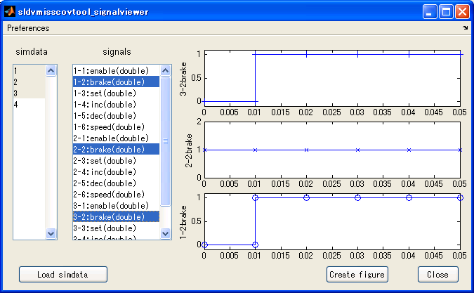

sldvmisscovtool Details
Contents
(1) GUI overview
This tool consists of six panes.
- Data management pane Import data from file(s), WorkSpace, or etc. format to MATLAB WorkSpace and assign them to a workspace data that can be imported by Simulink's input. The imported data can be exported to a arbitrary format.
- Target Model pane Select a model you want to test. Inport data-types will be solved by compiling the model after the model selected.
- Coverage pane Measure model coverage for selected TestCases imported in Data management pane.
- SLDV pane If there are some coverage objectives that are not covered by the selected Test cases, you can generate Test Cases that reach for the missing coverage objectives by auto test generation functionality of Simulink Design Verifier.
- Merging pane You can create a new test harness that include both given test cases in TestCase listbox and automatically generated test cases by Simulink Design Verifier.
- Information Hints for usage of this tool will be shown in this pane.

(2) Data management pane
(2-1) Import
Importing arbitrary data into WorkSpace. The data will be assigned as simdata variable in MATLAB WorkSpace with structure with Time format. You can create your own importing function (so called plug-in function) by writing MATLAB-code with given format. To create your own plug-in function, refer to Details of plug-in function . This tool provides following plug-in functions:

CSV-file
Signals are provided by a Comma-Separated Values. The first column is corresponding to time and the other columns are corresponding to data of signals.
Example：
Test Case 01
time, SigA, SigB
0.00, 0, 0
0.10, 10, 0
0.15, 5, 0
0.25, 5, 1
0.30, 7, 0
0.40, 7, 0CSV-file with individual time steps
Signals are provided by a Comma-Separated Values. All signals have their own time data.
Example：
Test Case 02
time, SigA, time, SigB
0, 0, 0, 0
0.1, 10, 0.25, 1
0.15, 5, 0.3, 0
0.3, 7, 0.4, 0
0.4, 7,MAT-file
Importing data from WorkSpace. A variable simdata must be assigned with structure with time format. Details of structure with time format is documented on
Help > Simulink > Importing and Exporting Data > Exporting Data to the MATLAB Workspace > Format Options > Structure with time
Signal Builder
Import data from currently selected Signal Builder block. This function works only when gcb command points out Signal Builder block.
sldvData
Import data from MAT-file created by test generation functionality of Simulink Design Verifier.
(2-2) Export
Exporting simdata variable defined in the Workspace to an arbitrary data format. You can create your own export function (so called plug-in function) by writing M-code with given format. To create your own plug-in function, refer to Details of plug-in function. This tool provides following plug-in functions:

- CSV-file Selected signals will be exported by a Comma-Separated Values. The first column is corresponding to time and the other columns are corresponding to data of signals.
- CSV-file with individual time steps Selected signals will be exported by a Comma-Separated Values. All signals have their own time data.
- MAT-file Exporting selected signals to MAT-file containing simdata variable with structure with time format.
- Signal Builder New model will be created and put a Signal builder block in which selected signals are put.
(2-3) Details of plug-in function
This tool provides a scheme to create user-defined importing and exporting functions so called plug-in function. By this scheme, you can create your own importing or exporting function without changing any code of sldvmisscovtool.
(2-3-1) Conditions to be recognized as a plug-in function
User created function will be recognized as a plug-in function when following conditions are satisfied:
- The function is stored with the same directory where sldvmisscovtool.m is stored.
- The file name of the M-code is beginning with import* in case of importing function and with export* in case of exporting function. ex.) Import function
importCSVfile.m importMATfile.m importWorkSpace.m
importCSVfile2.m importSignalBuilder.m importsldvDatafile.mex.) Export function
exportCSVfile.m exportMATfile.m
exportCSVfile2.m exportSignalBuilder.m(2-3-2) Format of importing plug-in function
Detail of the format is written in _importTemplate.m in the directory where sldvmisscovtool.m is stored.
(2-3-3) Format of exporting plug-in function
Detail of the format is written in _exportTemplate.m in the directory where sldvmisscovtool.m is stored.
(2-4) Signal Viewer Button
If you click *Signal Viewer* button, Signal Viewer GUI (sldvmisscovtool_signalviewer) will be displayed. This window enables you to view each signals of the test cases in detail.
(2-5) Signal Viewer GUI (sldvmisscovtool_signalviewer)

*Buttons and listboxes*
- simdata listbox: This listbox shows test cases in simdata variable loaded into this tool. 4 test cases are loaded in case of above figure.
- signals listbox: This listbox shows all signals in simdata selected in simdata listbox. x-y digits in each lines shows y-th signal in x-th test case and this corresponds to simdata(x).signals(y). If you select one or more lines in the listbox, the selected signals are drawn in axes. If Separate axes check in Preferences menu in toolbar is enabled, the signals are separately drawn. If it is disabled, the signals are drawn in the same axis.
- Close button: Close this GUI.
- "Load simdata" button Load simdata from WorkSpace into this tool.
- Create figure button: Create new figure window and copy all axes in this tool to the new window. This button is used for modifying using Plot Tool or command line API.
- Preference toolbar menu:
- Display legends
- Checked: Display legends on the axes. This option is valid in case Separate axes option is disabled.
- Unchecked: Do not display legends on the axes.
- Separate axes
- Checked: All signals are plotted in the different axes. This option is disabled in case more then 10 signals are selected.
- Unchecked: All signals are ploted in the same axes.
Language
- 日本語: Japanese mode.
- English : English mode.
(3) Target Model pane
The target model is selected at this stage. Data selected in the Test Cases listbox will be fed into the model.
By clicking

, you can select a model file to be set as the target model. If you click

in this case, the target model will be the result of bdroot command. After selected, the model will be opened and the following compile command will be executed internally:
modelname([],[],[],'compile')
The tool can obtain data types of the Inport blocks by compiling, then the data types of the Inport blocks will be listed in Name/Data Type listbox. The obtained data type will be used when Adopt model's data types will be clicked or coverage measurement will be executed in the Coverage pane.

clicking *Adopt model's data types, signals in the structure with time variable simdata stored in the WorkSpace will be cast to have the same data type with model's Inport blocks.
(4) Coverage pane
By clicking Recode coverage button, at first, all the data selected in the Test Cases listbox is checked to have the same data types with model's Inport blocks. If some of data types of the test cases have different data type from the Inport block's data type, then the following dialog will be shown:

Nothing will be done when you click NO in the dialog. If you click YES, simulation for all signals selected in the Test Cases listbox will be done and cumulative coverage for the target model will be measured. If there are some errors such as data type mismatching or number of input signals is not enough for the model, the test case will be un-selected in the Test Cases listbox.
If you click Coverage Report button, a model coverage report for the cumulative coverage will be shown.
(5) SLDV pane

clicking Analyze missing coverages, test cases for the un-covered coverage objectives will be generated using automated test vector generation function of Simulink Design Verifier.
If you don't have a license of Simulink Design Verifier, this pane will not be shown.
(6) Merge pane

By clicking Combined Report, coverage report for following two coverage data will be shown. Coverage data obtained by clicking Record coverage button. Coverage data for the test cases generated by missing coverage analysis.

By clicking Merge test cases, a new harness model will be created. The harness model includes a signal builder block with following signals:
- Signals selected in Test cases listbox.
- Signals generated by missing coverage analysis.
You can reuse these signals again by using From Signal builder block import function in the Data management pane.